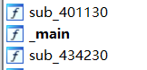
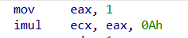
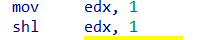
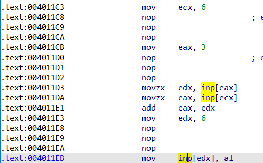
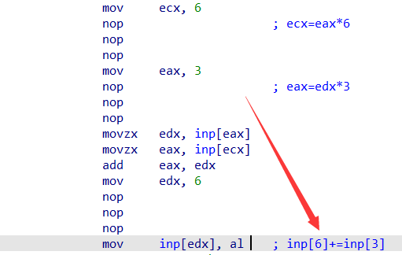
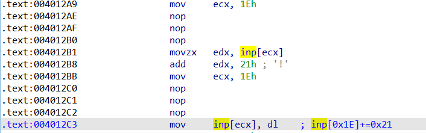

祥云杯2021 Dizzy
拿到题目用IDA打开,发现一个超大的main函数

代码很乱,先写个idapython脚本优化一下
将这种

还有这种指令全都优化了

都优化成这样子

优化之后可读性大大增加
这里的每一组操作都有个规律
像这种逻辑的,只有7条指令

而像这种的,只有5条指令

那处理起来就很容易了,先枚举出所有操作块,然后从后往前求逆就行
我的计算flag方案是idapython生成c代码,复制到c文件里编译执行相应的flag计算代码
flag: flag{Try_R3vers1ng_W1th_ScR!pt!}
生成求逆C源码的IDAPYTHON代码:
import idaapi
import idautils
import idc
flog=open('inst.log','a+')
def loginst(strinst):
global flog
flog.write(strinst+'\n')
def resolve7(inst):
idx1=get_operand_value(inst[0],1)
idx2=get_operand_value(inst[1],1)
op=GetDisasm(inst[4])[0:3]
if(op=='sub'):
loginst('inp[%d]+=inp[%d];' % (idx1,idx2))
if(op=='add'):
loginst('inp[%d]-=inp[%d];' % (idx1,idx2))
if(op=='xor'):
loginst('inp[%d]^=inp[%d];' % (idx1,idx2))
def resolve5(inst):
idx1=get_operand_value(inst[0],1)
val=get_operand_value(inst[2],1)
op=GetDisasm(inst[2])[0:3]
if(op=='sub'):
loginst('inp[%d]+=%d;' % (idx1,val))
if(op=='add'):
loginst('inp[%d]-=%d;' % (idx1,val))
if(op=='xor'):
loginst('inp[%d]^=%d;' % (idx1,val))
def resolveBlock(start):
inst_list=[]
cur=start
while True:
cur_dis=GetDisasm(cur)
if(cur_dis.find('nop')==-1):
inst_list.append(cur)
if(cur_dis.find('mov inp')!=-1):
cur=next_head(cur)
break;
cur=next_head(cur)
if(len(inst_list)==7):
resolve7(inst_list)
elif(len(inst_list)==5):
resolve5(inst_list)
else:
print('invaild! %X' % start)
exit()
return cur
def walkBlock(start):
inst_list=[]
cur=start
while True:
cur_dis=GetDisasm(cur)
if(cur_dis.find('nop')==-1):
inst_list.append(cur)
if(cur_dis.find('mov inp')!=-1):
cur=next_head(cur)
break;
cur=next_head(cur)
return cur
addr=0x4011C3
block_list=[]
while(addr!=0x434130):
if(addr==0x43306F):
addr=0x4330C0
block_list.append(addr)
addr=walkBlock(addr)
print(len(block_list))
i=len(block_list)
while i!=0:
i=i-1
resolveBlock(block_list[i])
flog.close()
C源码太长了就缩略一些
int main()
{
unsigned char inp[] = { 0x27,0x3C,0xE3,0xFC,0x2E,0x41,0x7,0x5E,0x62,0xCF,0xE8,0xF2,0x92,0x80,0xE2,0x36,0xB4,0xB2,0x67,0x77,0xF,0xF6,0xD,0xB6,0xED,0x1C,0x65,0x8A,0x7,0x53,0xA6,0x66 };
//此处省略5000行代码
printf("%s\n", inp);
}
去混淆代码1:
import idaapi
import idautils
import idc
from capstone import *
from pwn import *
def resolveBlock(start):
pass
def PatchByte(addr,Byte):
return ida_bytes.patch_byte(addr, Byte)
def copy_byte(addr,byte):
for i in range(0,len(byte)):
PatchByte(addr+i,byte[i])
def nop(addr, size):
#print(hex(addr))
for i in range(0,int(size)):
PatchByte(addr+i, 0x90)
i=0x4011C3
while i<=0x434130:
next_addr=idaapi.next_head(i,0xF34130)
cur_size=next_addr-i
next_size=idaapi.next_head(next_addr,0xF34130)-next_addr
cur=GetDisasm(i)
next=GetDisasm(next_addr)
if(cur.find('mov ')!=-1 and get_operand_value(i,1)==1):
if(next.find('imul ')!=-1):
pos=next.find('imul ')+len('imul ')
reg=next[pos:pos+3]
#print(pos,reg)
yuju='mov '+reg+','+str(get_operand_value(next_addr,2))
#print(yuju)
fh=Assemble(i,yuju)
if(fh[0]==True):
nop(i,cur_size)
nop(next_addr,next_size)
copy_byte(i,fh[1])
else:
print('error!\n')
exit()
i=next_addr
去混淆代码2:
import idaapi
import idautils
import idc
from capstone import *
from pwn import *
def resolveBlock(start):
pass
def PatchByte(addr,Byte):
return ida_bytes.patch_byte(addr, Byte)
def copy_byte(addr,byte):
for i in range(0,len(byte)):
PatchByte(addr+i,byte[i])
def nop(addr, size):
#print(hex(addr))
for i in range(0,int(size)):
PatchByte(addr+i, 0x90)
i=0x4011C3
while i<=0x434130:
next_addr=idaapi.next_head(i,0xF34130)
cur_size=next_addr-i
next_size=idaapi.next_head(next_addr,0xF34130)-next_addr
cur=GetDisasm(i)
next=GetDisasm(next_addr)
if(cur.find('mov ')!=-1 and get_operand_value(i,1)==1):
if(next.find('shl ')!=-1):
pos=next.find('shl ')+len('shl ')
reg=next[pos:pos+3]
#print(pos,reg)
yuju='mov '+reg+','+str(1 << get_operand_value(next_addr,1))
print(hex(i),yuju)
fh=Assemble(i,yuju)
if(fh[0]==True):
#pass
nop(i,cur_size)
nop(next_addr,next_size)
copy_byte(i,fh[1])
else:
print('error!\n')
exit()
i=next_addr